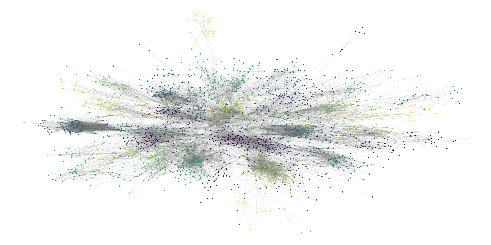

bigergm: Fit, Simulate, and Diagnose Hierarchical Exponential-Family Models for Big Networks
Roadmap: bigergm workshop
- Local dependence leveraging additional structure
- Preparation and Background
- Demonstration of capabilities of the package
bigergm - Application to Twitter (X): Following Network of State Legislators
Local dependence leveraging additional structure:
Non-overlapping blocks
Motivation
- Exponential Random Graph Models (ERGMs) express the probability of observing a network as a function of network features:
\[ \mathbb{P}_{\beta}(\mathbf{x}| \mathbf{y}) = \exp\left(\beta^\top \mathbf{s}(\mathbf{x}, \mathbf{y})\right)/ c(\beta, \mathbf{y}) \] where
- network \(\mathbf{x} = \{0,1\}^{N\times N}\)
- \(p\) covariates \(\mathbf{y} = (y_{i,p}) \in \mathbb{R}^{N\times q}\)
- \(\beta \in \mathbb{R}^p\) parameters
- \(\mathbf{s}(\mathbf{x}, \mathbf{y})\) network features
- \(c(\beta, \mathbf{y})\) normalizing constant
Exponential Random Graph Models for Big Networks
Exponential Random Graph Models for Big Networks
\[ \begin{split} \mathbb{P}_\theta(\mathbf{x} | \mathbf{y}, \mathbf{z}) = &\left[\prod_{k \neq l}^K \mathbb{P}_{B}(\mathbf{x}_{k,l} | \mathbf{y}, \mathbf{z})\right] \left[\prod_{k = 1}^K \mathbb{P}_{W}(\mathbf{x}_{k,k} | \mathbf{y},\mathbf{z}) \right] \end{split} \] where
- \(\mathbf{x}_{k,l}\) is the submatrix of \(\mathbf{x}\) between blocks \(k\) and \(l\)
- \(\mathbf{x}_{k,k}\) is the submatrix of \(\mathbf{x}\) within block \(k\)
- \(\mathbf{y}\) is the covariate matrix
- \(\mathbf{z}\) is the block structure of the network
Specification: Within-block Model
\[ \mathbb{P}_{W}(\mathbf{x}_{k,k} | \mathbf{y}, \mathbf{z}) = \exp\left(\alpha^\top \mathbf{s}_W(\mathbf{x}_{k,k}, \mathbf{y})\right)/ c_W(\alpha, \mathbf{y}, \mathbf{z}), \]
where
- \(\mathbf{s}_W(\mathbf{x}_{k,k}, \mathbf{y})\) is a vector of network features counting, e.g., the edges within block \(k\)
- \(\alpha\) parameter to estimate
- \(c_W(\alpha, \mathbf{y}, \mathbf{z})\) is the normalizing constant

Specification: Between-block Model
\[ \mathbb{P}_{B}(\mathbf{x}_{k,l} | \mathbf{y}, \mathbf{z}) = \prod_{(i,j) \text{; } z_{ik} = 1 \text{, } z_{jl} = 1} \mathbb{P}_{\beta}( x_{i,j} \mid \mathbf{y}, \mathbf{z}), \] where \[ \mathbb{P}_{\beta}( x_{i,j} | \mathbf{y},\mathbf{z}) = (\pi_{k,l}(\beta, \mathbf{y}))^{x_{i,j}} (1 - \pi_{k,l}(\beta, \mathbf{y}))^{1 - x_{i,j}} \] e.g.
\[ \pi_{k,l}(\beta, \mathbf{y}) = \text{logit}^{-1}\left(\beta_0 + \sum_{p = 1}^P \beta_p \, \mathbb{I}\left(y_{i,p} = y_{j,p}\right) \right) \]
Specification: Between-block Model
\[ \mathbb{P}_{B}(\mathbf{x}_{k,l} | \mathbf{y}, \mathbf{z}) = \exp\left(\beta^\top \mathbf{s}_B(\mathbf{x}_{k,l}, \mathbf{y})\right)/ c_B(\beta, \mathbf{y}, \mathbf{z}), \] where \[ \mathbf{s}_B(\mathbf{x}_{k,l}, \mathbf{y}) = \left(\sum_{i<j} \mathbb{I}(y_{1,i} = y_{1,j})\, x_{i,j}, ..., \sum_{i<j} \mathbb{I}(y_{P,i} = y_{P,j})\, x_{i,j}\right) \]
Remarks:
- Within- and between-block models can be represented by ERGMs
- Between-block models do not include terms that induce dependence between connections
Estimation
Background and Preparation
The package bigergm

- \(\mathtt{hergm}\): First package developed by Schweinberger & Luna (2018).
- \(\mathtt{lighthergm}\): Scaling up estimation to big networks based on Babkin, Stewart, Long, & Schweinberger (2020) and Dahbura, Komatsu, Nishida, & Mele (2021)
- \(\mathtt{bigergm}\): Extension to directed networks with a clean interface and additional features based on Fritz, Georg, Mele, & Schweinberger (2024)
Installation
- The package can be installed in R as follows:
- An alternative is to install the package from GitHub:
bigergm: Hierarchical exponential-family random graph models for big networks
bigergm: Hierarchical exponential-family random graph models for big networks
- Specify
- Simulate
- Estimate
- Diagnose
1. Specify
Specify a ERGM with additional structure
- Within-block ERGM (colored blue)
- Between-block ERGM colored yellow)
Specify a ERGM with additional structure
The block memberships saved as a vertex attribute ‘block’:
lhs_network: Anetworkobject where the simulation should be started. States the size of the network and whether it’s directed or not.network_term(s):ergmTermsspecifying the network model.- Within-block ERGM: Dyad-independent or dyad-dependent terms
- Between-block ERGM: Only dyad-independent terms
Example 1
Within-block model: \[ \mathbf{s}_W(\mathbf{x}_{k,k}, \mathbf{y}) = \left(\sum_{i<j} x_{i,j}, \sum_{i<j} \mathbb{I}(y_{1,i} = y_{1,j})\, x_{i,j}, \sum_{i<j} \mathbb{I}(y_{1,i} = y_{1,j})\, x_{i,j}\right) \] Between-block model: \[ \mathbf{s}_B(\mathbf{x}_{k,l}, \mathbf{y}) = \left(\sum_{i<j}x_{i,j}, \sum_{i<j} \mathbb{I}(y_{1,i} = y_{1,j})\, x_{i,j}, \sum_{i<j} \mathbb{I}(y_{1,i} = y_{1,j})\, x_{i,j}\right) \]
Example 2
Within-block model: \[ \begin{split} \mathbf{s}_W(\mathbf{x}_{k,k}, \mathbf{y}) = \Bigg(&\sum_{i<j} x_{i,j}, \sum_{i<j} \mathbb{I}(y_{1,i} = y_{1,j})\, x_{i,j}, \sum_{i<j} \mathbb{I}(y_{1,i} = y_{1,j})\, x_{i,j}, \\ &\sum_{i<j} x_{i,j}\,\mathbb{I} \Bigg(\sum_{h \neq i,j} x_{i,h}\, x_{h,j}>0 \Bigg)\Bigg) \end{split} \]
Between-block model: \[ \mathbf{s}_B(\mathbf{x}_{k,l}, \mathbf{y}) = \left(\sum_{i<j}x_{i,j}, \sum_{i<j} \mathbb{I}(y_{1,i} = y_{1,j})\, x_{i,j}, \sum_{i<j}\mathbb{I}(y_{1,i} = y_{1,j})\, x_{i,j}\right) \]
2. Simulate
Simulate
- Specify the base network
# Load the required packages
library(bigergm)
library(network)
# Ensure that all results are reproducible
set.seed(123)
# Specify base network (which has 200 nodes and is undirected)
network_tmp <- network::network.initialize(n = 200, directed = FALSE)
# Assign a block membership to each node
network_tmp%v% "block" <- sample(1:4, 200, replace = TRUE)
# Assign a covariate 'x' and 'y' to each node
network_tmp%v% "x" <- sample(1:5, 200, replace = TRUE)
network_tmp%v% "y" <- sample(c("A","B","C"), 200, replace = TRUE)- Specify the model formula
Simulate
- Simulate a network from specified model
sim_net <- simulate_bigergm(
# Model specification
formula = model_formula,
# The coefficients for the between connections
coef_between = c(-4.7,0.8, 0.4),
# The coefficients for the within connections
coef_within = c(-2.5,1,1,0.5),
# Number of simulations
nsim = 1,
# Control argument to guide simulation
control_within = ergm::control.simulate.formula(MCMC.burnin = 50000, MCMC.interval = 10000),
# Ensure that all results are reproducible
seed = 123
)Simulate
- Plot simulated network
3. Estimate
Estimate with unknown block structure
# Update the formula to refer to the simulated network
model_formula <- update(model_formula, sim_net~.)
res <-bigergm(
# The model you would like to estimate
object = model_formula,
# The number of blocks
n_blocks = 4,
# The maximum number of MM steps
n_MM_step_max = 100,
# The tolarence for the MM algorithm
tol_MM_step = 1e-6,
# Perform parameter estimation after the block recovery step
estimate_parameters = TRUE,
# Indicate whether clustering should take into account nodematch on x and y
clustering_with_features = TRUE,
# Keep track of block memberships at each iteration
check_block_membership = TRUE
)Estimate with unknown block structure
Call:
.main()
Found 4 clusters of relative sizes:
0.295 0.275 0.225 0.205
Results of within-cluster estimation:
Maximum Pseudolikelihood Results:
Estimate Std. Error MCMC % z value Pr(>|z|)
edges -2.70189 0.08884 0 -30.41 <1e-04 ***
nodematch.x 0.93662 0.08120 0 11.54 <1e-04 ***
nodematch.y 0.91773 0.07333 0 12.52 <1e-04 ***
transitiveties 0.65987 0.05540 0 11.91 <1e-04 ***
---
Signif. codes: 0 '***' 0.001 '**' 0.01 '*' 0.05 '.' 0.1 ' ' 1
Results of between-cluster estimation:
Results:
Estimate Std. Error MCMC % z value Pr(>|z|)
edges -4.5848 0.1062 0 -43.184 < 1e-04 ***
nodematch.x 0.5452 0.1615 0 3.375 0.000738 ***
nodematch.y 0.1856 0.1529 0 1.214 0.224796
---
Signif. codes: 0 '***' 0.001 '**' 0.01 '*' 0.05 '.' 0.1 ' ' 1
AIC: 6709.794 BIC: 6736.106Ground truth coefficients:
- Within-block: -2.5 (edges), 1 (nm.x), 1 (nm.y), 0.5 (tt)
- Between-block: -4.7 (edges), 0.8 (nm.x), 0.4 (nm.y)
Estimate with unknown block structure
Estimate with unknown block structuree
- Compare the estimated block structure with the true block structure by the adjusted Rand index (ARI)
- Check the clustering step for convergence
Estimate with known block structure
res_known <-bigergm(
# The model you would like to estimate
object = model_formula,
# Specify the block structure
blocks = sim_net %v% "block"
)
summary(res_known)Call:
.main()
Found 4 clusters of relative sizes:
0.225 0.275 0.29 0.21
Results of within-cluster estimation:
Maximum Pseudolikelihood Results:
Estimate Std. Error MCMC % z value Pr(>|z|)
edges -2.67073 0.08859 0 -30.15 <1e-04 ***
nodematch.x 0.93762 0.08116 0 11.55 <1e-04 ***
nodematch.y 0.91850 0.07332 0 12.53 <1e-04 ***
transitiveties 0.63566 0.05512 0 11.53 <1e-04 ***
---
Signif. codes: 0 '***' 0.001 '**' 0.01 '*' 0.05 '.' 0.1 ' ' 1
Results of between-cluster estimation:
Results:
Estimate Std. Error MCMC % z value Pr(>|z|)
edges -4.5891 0.1061 0 -43.234 < 1e-04 ***
nodematch.x 0.5562 0.1604 0 3.468 0.000524 ***
nodematch.y 0.2138 0.1516 0 1.410 0.158430
---
Signif. codes: 0 '***' 0.001 '**' 0.01 '*' 0.05 '.' 0.1 ' ' 1
AIC: 6726.304 BIC: 6752.6033. Diagnose
Diagnose
- Check if simulations from the estimated model match the observed network
- Function calculates degree, edgewise shared partner, and geodesic distance statistics
tmp <- gof(res_known,
# Control arguments for within-block simulations
control_within = ergm::control.simulate.formula(MCMC.burnin = 50000,
MCMC.interval = 10000),
# How many simulations should be performed?
nsim = 100,
# Either 'full' or 'within' to say if gof should be based on only
# within-connections or all
type = "full",
# Ensure that all results are reproducible
seed = 123,
# Should the simulation start from the observed network?
start_from_observed = TRUE,
# Should all geodesic distances be computed for the simulated networks?
compute_geodesic_distance = TRUE)Diagnose
Application to Twitter (X):
Following Network of State Legislators
Data: Twitter (X) network of U.S. state legislators
We are indebted Bruce Desmarais for sharing the Twitter (X) data and allowing us to include them in the package:
Gopal, Kim, Nakka, Boehmke, Harden, Desmarais. The National Network of U.S. State Legislators on Twitter. Political Science Research & Methods, Forthcoming.
Kim, Nakka, Gopal, Desmarais, Mancinelli, Harden, Ko, and Boehmke (2022). Attention to the COVID-19 pandemic on Twitter: Partisan differences among U.S. state legislators. Legislative Studies Quarterly 47, 1023–1041.
Data: Twitter (X) network of U.S. state legislators
Network attributes:
vertices = 2191
directed = TRUE
hyper = FALSE
loops = FALSE
multiple = FALSE
bipartite = FALSE
total edges= 33321
missing edges= 0
non-missing edges= 33321
Vertex attribute names:
gender party race state vertex.names
Edge attribute names not shown Data: Twitter (X) network of U.S. state legislators
1. Specify
- Issue with blocks of different size: Parameters of within-block model may change between blocks
- Solution based on
ergm.multi: Size-dependent parametrizations
Exercise 1: Specification
- Specify a HERGM for the Twitter (X) network of U.S. state legislators with the following terms:
- Homophily based on party affiliation, race, and gender with
nodematchstatistic - Size-dependent parametrizations of the edge term
- Homophily based on party affiliation, race, and gender with
Exercise 2: Estimation
- Estimate the HERGM with the
bigergmfunction assuming there are 50 blocks (use the covariate information for the first step)- Check if different initialization methods lead to different results (see help(bigergm) for guidance on availablity of different initialization methods).
- Compare the estimated blocks with the state each legislator serves for with the adjusted Rand index (ARI).
Exercise 2: Estimation
- Estimate the HERGM with the
bigergmfunction assuming there are 50 blocks (use the covariate information for the first step)- Check if different initialization methods lead to different results (see help(bigergm) for guidance on availablity of different initialization methods).
- Compare the estimated blocks with the state each legislator serves for with the adjusted Rand index (ARI).
Exercise 3: Simulation
- Simulate 10 networks from the estimated model and plot the number of edges in the within- and between-block networks
Solution
twitter_sim <- simulate(twitter_tmp, output = "stats", nsim = 10,
control_within = control.simulate.formula(MCMC.interval = 20000))
# plot(twitter_sim$within_network$edges,
# xlab = "Index", ylab = "Within-block Edges", type = "l")
# plot(twitter_sim$between_network$edges,
# xlab = "Index", ylab = "Within-block Edges", type = "l")1. Specify
- Issue with blocks of different size: Parameters of the within-block model might change between blocks
- Solution based on
ergm.multi: Size-dependent parametrizations!
2. Estimate
- Support for parallel computation and ML estimation for within-block model
twitter_res <- bigergm(
object = model_formula,
# The number of blocks
n_MM_step_max = 1000,tol_MM_step = 0.0001,
# The maximum number of MM steps
estimate_parameters = TRUE,
# Perform parameter estimation after the block recovery step
clustering_with_features = TRUE,
# Indicate wether clustering should take into account
# nodematch on characteristics
check_block_membership = TRUE,
# How many blocks should be estimated?
n_blocks = 50,
# Which estimation for the within-block model should be used?
method_within = "MLE",
# Control arguments for within-block simulations
control_within = control.ergm(parallel=5, parallel.type="PSOCK",
MCMC.burnin = 10000,
MCMC.interval = 20000))2. Estimate
- Homophily based on party affiliation
- Strong reciprocity, decreasing with network size
- Strong transitivity, decreasing with network size
Call:
.main()
Found 50 clusters of relative sizes:
0.02418987 0.02008215 0.02784117 0.01780009 0.0109539 0.03651301 0.02647193 0.01643085 0.01916933 0.03833866 0.03012323 0.03194888 0.005933364 0.01688727 0.005476951 0.01186673 0.01962574 0.01141031 0.03423094 0.04792332 0.02008215 0.04198996 0.009128252 0.03103606 0.01414879 0.007302602 0.01506162 0.02555911 0.0182565 0.007302602 0.01916933 0.01186673 0.02555911 0.02510269 0.02921041 0.007302602 0.02099498 0.01551803 0.005476951 0.01141031 0.03423094 0.02555911 0.02373346 0.04518485 0.01597444 0.007302602 0.006389776 0.009128252 0.007302602 0.01049749
Results of within-cluster estimation:
Monte Carlo Maximum Likelihood Results:
Estimate Std. Error MCMC % z value Pr(>|z|)
edges -5.45631 0.28616 0 -19.067 < 1e-04 ***
nodematch.party 0.94663 0.01448 0 65.373 < 1e-04 ***
nodematch.race -0.09377 0.01241 0 -7.553 < 1e-04 ***
nodematch.gender 0.04707 0.01249 0 3.770 0.000163 ***
N(1)~transitiveties 2.08173 0.25310 0 8.225 < 1e-04 ***
N(log(n))~transitiveties -0.42863 0.06667 0 -6.429 < 1e-04 ***
N(1)~mutual 3.43146 0.24329 0 14.104 < 1e-04 ***
N(log(n))~mutual -0.29835 0.05813 0 -5.132 < 1e-04 ***
N(log(n))~edges 0.62627 0.07441 0 8.416 < 1e-04 ***
---
Signif. codes: 0 '***' 0.001 '**' 0.01 '*' 0.05 '.' 0.1 ' ' 1
Results of between-cluster estimation:
Results:
Estimate Std. Error MCMC % z value Pr(>|z|)
edges -8.03344 0.04456 0 -180.263 <1e-04 ***
nodematch.party 1.57107 0.04033 0 38.956 <1e-04 ***
nodematch.race -0.16491 0.03039 0 -5.427 <1e-04 ***
nodematch.gender 0.19144 0.03030 0 6.319 <1e-04 ***
---
Signif. codes: 0 '***' 0.001 '**' 0.01 '*' 0.05 '.' 0.1 ' ' 1
AIC: 184705.1 BIC: 184795.72. Estimate
- Exploit that
est_withinis anergmobject - Check if the MCMC chains used for estimation have converged

Note: MCMC diagnostics shown here are from the last round of
simulation, prior to computation of final parameter estimates.
Because the final estimates are refinements of those used for this
simulation run, these diagnostics may understate model performance.
To directly assess the performance of the final model on in-model
statistics, please use the GOF command: gof(ergmFitObject,
GOF=~model).3. Diagnose: Simulation
3. Diagnose: Simulation
3. Diagnose: GoF
# Assess fit
twitter_gof <- gof(twitter_res,
# How many simulations should be performed?
n_sim = 100,
# Ensure that all results are reproducible
seed = 2,
# Either 'full' or 'within' to say if gof should be based on only
# within-connections or all
type = "within",
# Should the geodesic distance be computed?
compute_geodesic_distance = TRUE,
# Control arguments for within-block simulations
control_within = control.simulate.formula(parallel=4,
parallel.type="PSOCK",
MCMC.burnin = 10000,
MCMC.interval = 20000))3. Diagnose: GoF
- Plot the goodness-of-fit statistics
Conclusion and Outlook
bigergmis a powerful tool for estimating, simulating, and diagnosing HERGMs for big networks- Package is under active development:
- Degree-correction
- Bipartite networks
- Overlapping blocks
- More efficient estimation algorithms
- Feedback and contributions are welcome!